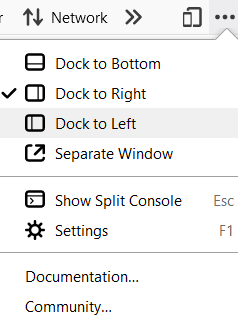
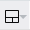
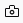
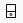
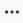
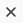

Network Monitor

See the network requests made when a page is loaded.
Firefox Developer Tools is a set of web developer tools built into Firefox. You can use them to examine, edit, and debug HTML, CSS, and JavaScript.
This section contains detailed guides to all of the tools as well as information on how to debug Firefox for Android, how to extend DevTools, and how to debug the browser as a whole.
If you have any feedback on DevTools or want to contribute to the project, you can join the DevTools community.
Note: If you are just getting started with web development and using developer tools, our learning docs will help you — see Getting started with the Web and What are browser developer tools? for good starting points.
You can open the Firefox Developer Tools from the menu by selecting Tools > Web Developer > Toggle Tools or use the keyboard shortcut Ctrl + Shift + I or F12 on Windows and Linux, or Cmd + Opt + I on macOS.
The ellipsis menu on the right-hand side of Developer Tools contains several commands that let you perform actions or change tool settings.

|  | This button only appears when there are multiple iframes on a page. Click it to display a list of the iframes on the current page and select the one with which you want to work. |
|  | Click this button to take a screenshot of the current page. (Note: This feature is not turned on by default and must be enabled in settings before the icon will appear.) |
|  | Toggles Responsive Design Mode. |
|  | Opens the menu that includes docking options, the ability to show or hide the split console, and Developer Tools settings. The menu also includes links to the documentation for Firefox Web Tools and the Mozilla Community. |
|  | Closes the Developer Tools |
View and edit page content and layout. Visualize many aspects of the page including the box model, animations, and grid layouts.
See the network requests made when a page is loaded.
Analyze your site's general responsiveness, JavaScript, and layout performance.
See how your website or app will look and behave on different devices and network types.
Provides a means to access the page's accessibility tree, allowing you to check what's missing or otherwise needs attention.
Provides tools for inspecting and debugging modern web apps (also known as Progressive Web Apps). This includes inspection of service workers and web app manifests.
Note: The collective term for the UI inside which the DevTools all live is the Toolbox.
These developer tools are also built into Firefox. Unlike the "Core Tools" above, you might not use them every day.

For the latest developer tools and features, try Firefox Developer Edition.
If you open the developer tools using keyboard shortcuts or the equivalent menu items, they'll target the document hosted by the currently active tab. But you can attach the tools to a variety of other targets, too, both within the current browser and in different browsers or even different devices.
By default, the developer tools are attached to a web page or web app. But you can also connect them to the browser as a whole. This is useful for browser and add-on development.
For information on extending the Firefox DevTools, see Extending the developer tools over in the Browser Extensions section of MDN.
Firebug has come to the end of its lifespan (see Firebug lives on in Firefox DevTools for details of why), and we appreciate that some people will find migrating to another less familiar set of DevTools to be challenging. To ease a transition from Firebug to the Firefox developer tools, we have written a handy guide — Migrating from Firebug.
If you want to help improve the developer tools, these resources will get you started.